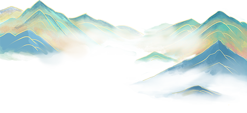
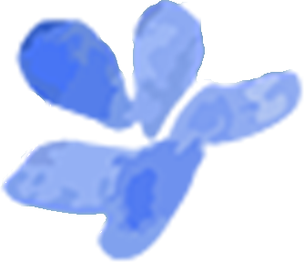
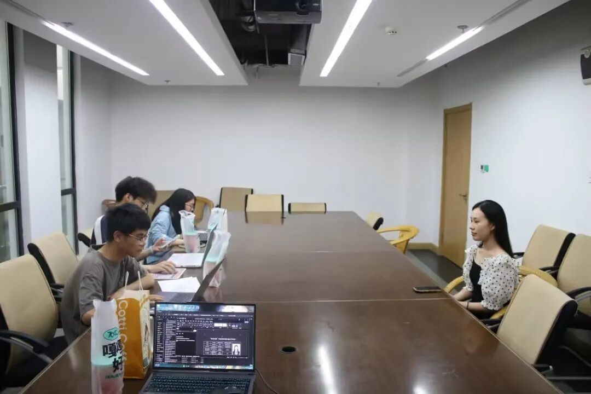
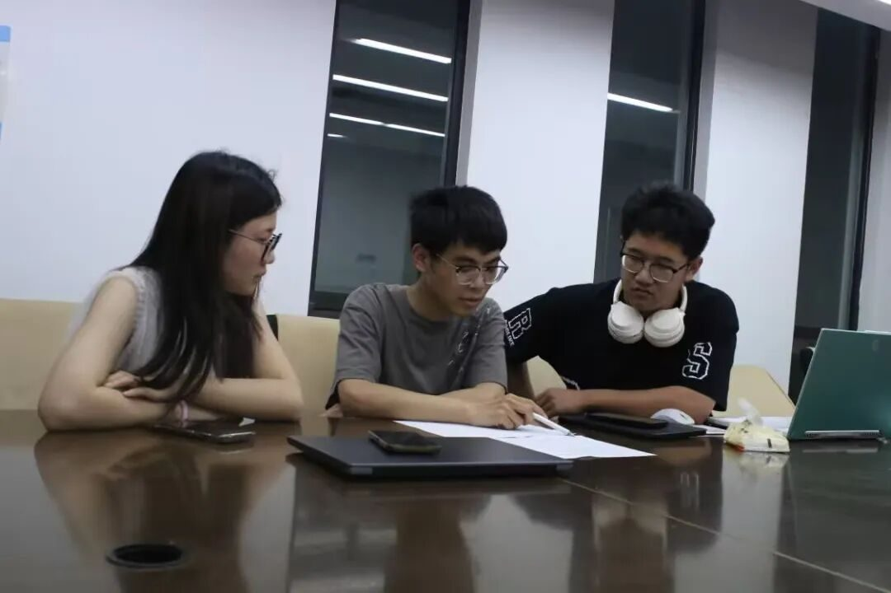
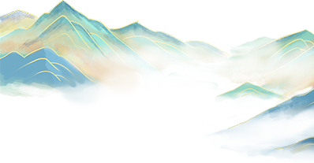
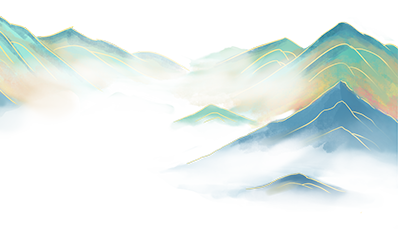

非遗旧梦，启航新章

行者无疆第十六期
面试启新篇


志同道合者，终会相逢
心向热爱时，前路自明
第十六期行者无疆实践团的招新面试圆满收官！
这场以非遗文化为纽带的相遇
让来自五湖四海的灵魂交汇
行者无疆

01
心之所向，素履以往

无论是第一轮面试中同学们的自信从容、侃侃而谈，还是二轮面试中大家的深入思考、大显身手，无不是身体力行地诉说着对非遗文化的憧憬与热爱，展现出传承文化的决心与勇气。每一段精心准备的自我介绍，每一次充满思考的问答交流，都如点点星光，彰显着“行者”二字在同学们心中的分量。

02
相遇即是缘
曲终人不散

在几天里与大家面对面的交流中，小行感受到了大家的真诚与渴望，也看到了同学们闪闪发光的特质，但由于录取名额实在有限，很多优秀的小伙伴没有入选，不过小行相信金子在哪里都能发光，即便此次未能携手同行，大家依然可以在守护非遗的道路上，与小行并肩同行！

03
做文化的行者
我们一直在路上
左右滑动查看更多
第十六期行者无疆实践团已集结完毕，十五位满怀热忱、立志为非遗文化披荆斩棘的行者整装待发，即将踏上天津之旅，续写非遗新篇章！

来源 | 行者无疆实践团
文字 | 行者无疆实践团
图片 | 杩健辉
编辑 | 张瑶琪
审核 | 李凌志 杩健辉 张瑶琪
责编 | 邹靓靓 周 亮